<div class="container mb-9">
  <div class="d-flex align-item-center justify-content-center">
    
    
    
  </div>
  
  <div class="container mb-8">
    <div class="bg-primary-30 py-11 px-13 border-16 border-gray-20 border ">
      <p class=" fs-3 lh-sm text-center ">
        哈囉，歡迎加入 TT 資訊！
      </p>
      <p class=" fs-3 lh-sm text-center  ">
        在正式加入專案開發之前，需要請你先了解 Scrum 的流程與精神！
      </p>
      <p class=" fs-3 lh-sm text-center ">
        請接受挑戰任務，成功通過 Scrum 新手村的挑戰任務吧～
      </p>      
    </div>
  </div>
  <div class="d-flex justify-content-center">
    <a href="role.html" class="btn btn-primary shadow rounded-0 py-6 px-10 fs-3 lh-sm text-white btn-deco text-shadow ">接受挑戰</a>
  </div>
</div>
